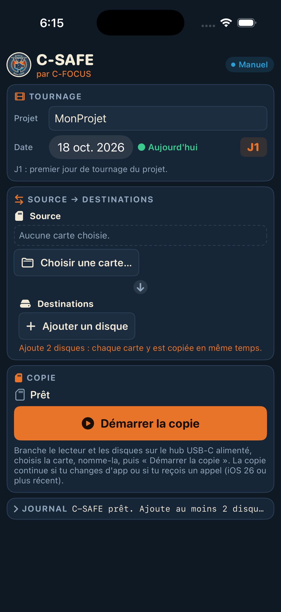

Installation gratuite, sans App Store · par C-FOCUS · iPhone ou iPad avec iOS 26 conseillé
Ouvre l'app, touche Connect, puis Autoriser et tape ton code. Ce « VPN » reste dans l'iPhone, rien ne passe par Internet. Il permet à SideStore de signer les apps. Laisse-le connecté.
Télécharge-le sur iloader.app. Sur Mac, ouvre le .dmg et glisse iloader dans Applications. Sur PC, installe d'abord iTunes, puis iloader.
Branche l'iPhone en USB et touche Se fier sur l'iPhone. Dans iloader : connecte-toi avec ton identifiant Apple, choisis ton iPhone, puis SideStore (Stable). Compte 2 à 5 minutes.
Réglages › Général › VPN et gestion de l'appareil, puis touche ton identifiant Apple, ensuite Se fier.
Réglages › Confidentialité et sécurité › Mode développeur, tout en bas. L'iPhone redémarre. Touche ensuite Activer et tape ton code.
Vérifie que LocalDevVPN est connecté. Ouvre SideStore et connecte-toi avec le même identifiant Apple. Dans l'onglet Mes apps, touche le bouton 7 JOURS à côté de SideStore. S'il demande de créer un nouveau certificat, réponds oui.
Dans Safari, ouvre ce lien et touche Télécharger :
github.com/h5r9ptb9kt-byte/C-SAFE/releases/latest/download/C-SAFE.ipa
Le fichier arrive dans Fichiers › Téléchargements.
SideStore › Mes apps › bouton + en haut à gauche, puis choisis C-SAFE.ipa. Au bout de quelques secondes, l'icône C-SAFE apparaît sur l'écran d'accueil.
Raccourcis › Automatisation › ＋ › Heure de la journée
• Heure : 03:00, Répéter : Tous les jours
• Choisis Exécuter immédiatement et désactive « M'avertir lors de l'exécution »
• Action : cherche SideStore et choisis Refresh All Apps (« Tout rafraîchir »)
Lance-la une fois à la main pour accepter les autorisations. Ensuite, chaque nuit, l'iPhone renouvelle C-SAFE tout seul, s'il est en Wi-Fi avec LocalDevVPN connecté.
• Branche le hub USB-C alimenté (secteur ou batterie) sur l'iPhone, puis le lecteur de carte et les disques sur le hub.
• Dans C-SAFE : Ajouter un disque, puis choisis le disque dans Fichiers. Fais-le pour chaque disque, une seule fois.
• Choisir une carte, puis choisis la carte. Vérifie la source, le modèle et le numéro.
• Démarrer la copie. Tu peux changer d'app ou recevoir un appel : la copie continue, et sa progression
s'affiche en haut de l'écran.
